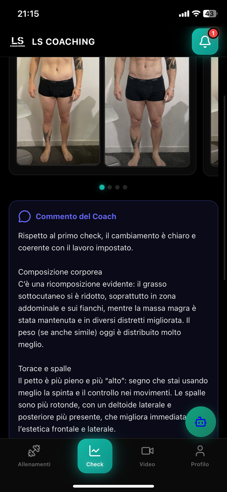

La scheda non entra nella tua settimana
Gli esercizi e il numero di sedute partono dal tempo e dagli attrezzi che hai davvero a disposizione.
Allenati con un piano costruito sui tuoi obiettivi, sul tempo che hai e sull’attrezzatura che usi. In palestra o a casa, con me al tuo fianco.

Gli esercizi e il numero di sedute partono dal tempo e dagli attrezzi che hai davvero a disposizione.

Guardi i video degli esercizi nell’app e puoi inviarmi le tue esecuzioni per ricevere indicazioni specifiche.
Ai check rivediamo carichi, ripetizioni e recuperi per capire quando progredire e quando adattare la scheda.
Ti seguo in videochiamata e nell’app LS Coaching. In palestra o a casa, hai una scheda costruita su di te e la rivediamo insieme ogni due settimane.
Mi racconti cosa vuoi ottenere, come ti alleni oggi e cosa ti ha frenato finora. Ti spiego come lavorerei con te. Poi scegli se partire.
Come prenotare l’incontroDefiniamo le priorità e monitoriamo la partenza. Da lì costruiamo una scheda con esercizi, serie, ripetizioni e recuperi che puoi seguire nella tua settimana.
Ogni due settimane rivediamo i tuoi dati e aggiorniamo la scheda. Tra un check e l’altro, puoi inviarmi i video delle esecuzioni su WhatsApp. L’obiettivo è renderti sempre più autonomo.
Apri la scheda, guarda gli esercizi e tieni traccia di come è andata.
La scheda rimane a portata di mano, con video e indicazioni per preparare ogni seduta.
Salva le serie, le ripetizioni e i carichi. Al prossimo allenamento sai da dove ripartire.
Uso lo storico e i tuoi feedback per aggiornare il programma quando serve.


Sono il tuo riferimento per il programma, la tecnica e le progressioni. Ai check ti spiego cosa cambiamo e perché, così impari a gestire il tuo allenamento con più autonomia.
Conosciamoci in videochiamata★★★★★
«Ti segue a 360 gradi»
Lorenzo · Trustpilot
★★★★★
«Ho iniziato a vedere dei miglioramenti dopo mesi di stallo»
Giuseppe · Trustpilot
★★★★★
«Gli esercizi sono personalizzati e chiari da seguire»
Antonio · Trustpilot
In consulenza ti spiego costi e opzioni del percorso.
Per allenarti con un programma su misura e sapere come farlo progredire.
Per coordinare allenamento e alimentazione nello stesso percorso.
Puoi allenarti a casa o in palestra. Impostiamo la scheda sugli attrezzi che hai e sul tuo livello.
Puoi mandarmi un video dell’esecuzione su WhatsApp. Lo rivedo e ti indico cosa modificare nella prossima seduta.
Sì. Rivediamo il programma ai check tenendo conto dei progressi, dei tuoi feedback e di eventuali cambiamenti nella settimana.
Il Base è dedicato all’allenamento. Se vuoi coordinare anche l’alimentazione, puoi scegliere il Coaching Premium.